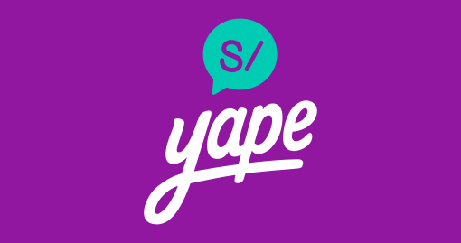
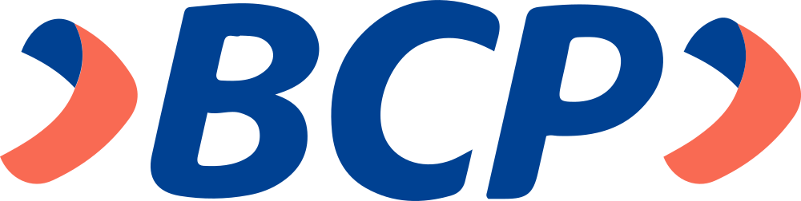

5 segundos.
Te arranchan el celular desde una moto.
Lo peor viene
después.



en el 1.er semestre de 2025
Fuente: RENTESEG / OSIPTEL · sin separar por tipo de robo
Un caso real · Jesús María, Lima
“De mi Yape habían pasado 4 plines de 500… me robaron 2000 soles.”
Fuente: Trome, abril de 2026
Quien camina en Lima con el celular en la mano.
El celular avisa solo, y tu red bloquea tus cuentas por ti.
Demo.
alerta-arrebato.gabrieldgc1999.workers.dev
ESCANEA Y PRUÉBALA
Cómo está hecho
Celular
Sensores y GPS
Kotlin · SwiftDetector
Decide ahí mismo, sin internet
TypeScript propioNube
Guarda la ruta en vivo
CloudflareTu red
Recibe el aviso con la ruta
WhatsApp · SMSAl confirmar, el celular se bloquea: Android al instante, iPhone con Atajos.
Probado con datos reales
(4,5 a 6 s) ¿Robo completo? 130 casos armados con tramos de esas grabaciones reales: caminar + jalón + huida en vehículo
Una auditoría independiente dijo que éramos optimistas. Corregimos el detector.
Datos públicos de terceros, no de nuestro simulador · No existe un dataset público de robos en moto
Decisiones
| Decidimos | Por qué | Lo que cuesta |
|---|---|---|
| Alerta silenciosa | Sonar provoca violencia | Se entera tu red, no tú |
| Solo moto | Firma física clara | No detecta lanzas |
| iPhone con Atajos | Apple no deja bloquear | Tarda unos segundos |
| Tu red bloquea el banco | No hay API bancaria | Alguien llama al 1820 |
¿Preguntas?
Gabriel · Cesar · Mauricio · Piero
LA APP
¿Y las falsas alarmas?
| Situación | Cómo la descartamos |
|---|---|
| Se te cae el celular | Queda quieto y el GPS no se mueve |
| Bache en la moto, frenazo en la combi | Ya ibas en un vehículo antes del golpe (GPS) |
| Auto parado que arranca en el semáforo | Historial de 2 min y la velocidad sube de a poco |
| Sacas el celular del bolsillo | Después sigues caminando: no hay huida |
Y si igual se equivoca: 10 segundos en silencio para cancelar con tu PIN antes de avisar a tu red.
¿Google no hace esto ya?
Detecta el arrebato y solo bloquea la pantalla. Nadie se entera.
Detecta y avisa sola a tu red, con la ruta en vivo.
No competimos con Google: lo sumamos.
¿La app bloquea el banco sola?
No hay API: el banco verifica al titular.
Ponemos el número correcto frente a la persona correcta.
- 1820 (ASBANC): conecta con el área de bloqueo de 17 bancos
- La operadora: suspende la línea y bloquea el IMEI
- Denuncia digital de la PNP y "Checa tu IMEI"
Los datos solo se ven cuando alguien confirma el robo, y se borran al cancelar o a las 24 h.
Demo vs. calle
| Umbral | En la calle | En la demo |
|---|---|---|
| Velocidad de huida | ≥ 15 km/h, 2 lecturas seguidas | ≥ 7 km/h (alguien corriendo) |
| Jalón | ≥ 1,5 g y giro ≥ 4 rad/s | ≥ 1,2 g y giro ≥ 4 rad/s |
| Sin GPS | No alerta solo | Sí (para la demo bajo techo) |
Nadie se pone delante de una moto: los arrebatos de prueba se hacen a pie o en bici, en un lugar vacío.
Lo que todavía falta
- Grabar arrebatos en bici con GPS (no hay datos públicos)
- WhatsApp a cualquiera: Meta revisa las plantillas
- Si cierras la app deslizándola, la protección se apaga
- Mapa con calles reales en la página del contacto